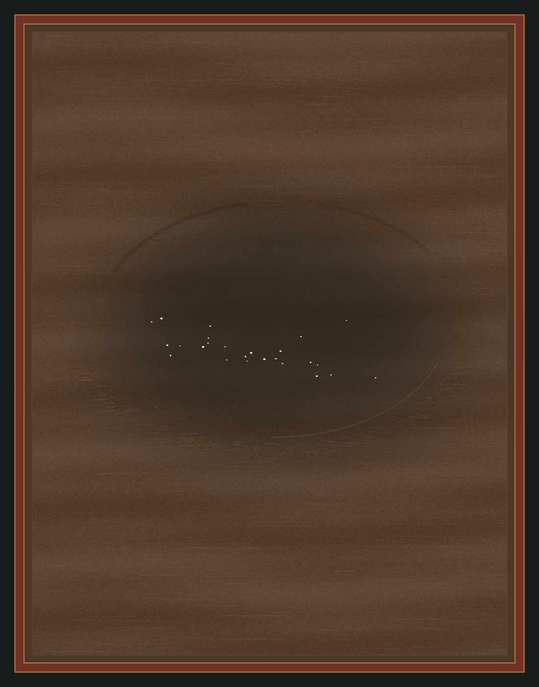

A mill floor after the stone has passed. No tool or body remains in view; the timber keeps a broad, shallow hollow and a few grains of flour.

The hollow is made by softened shadow and interrupted grain rather than an outlined object. Its few grains do not complete a ring. The title names what the surface holds, while the picture leaves the cause partly absent.